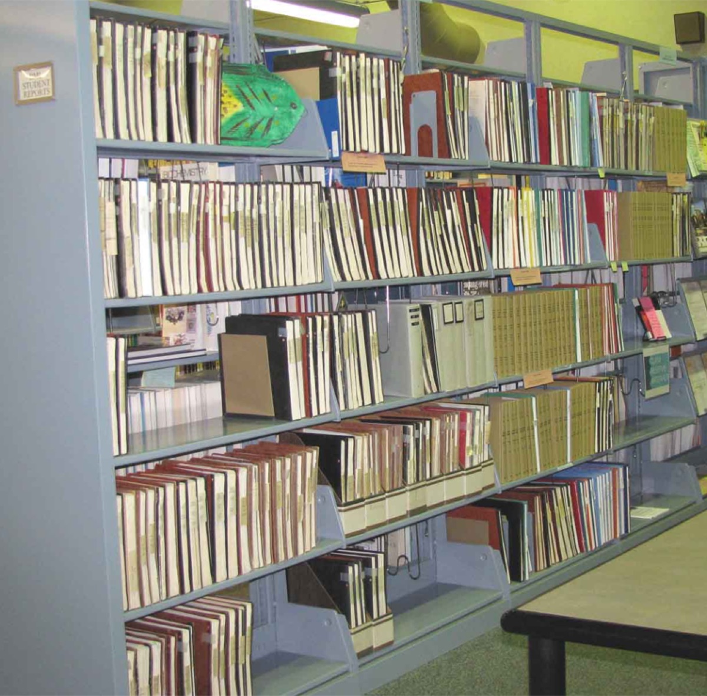
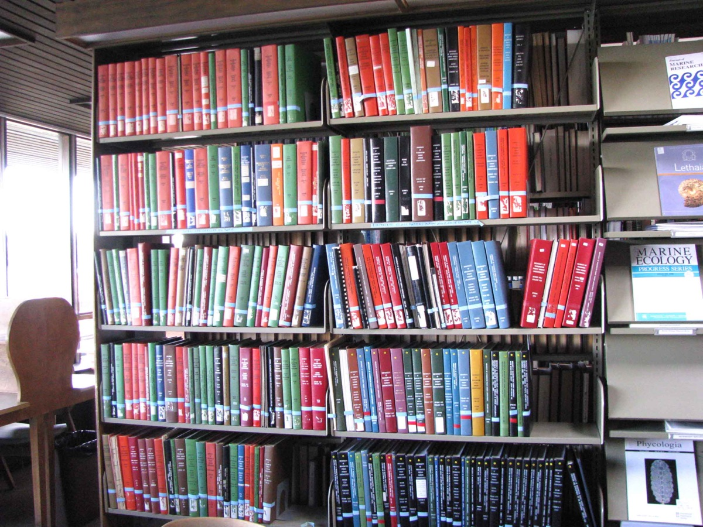
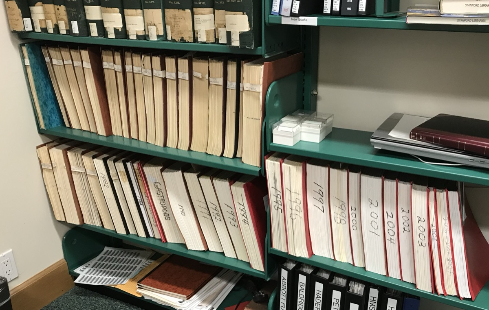

Data Over Decades
A collaborative project to facilitate discovery and analysis of marine biology student research papers on the North American West Coast.
Overview
Libraries at several academic marine research stations on the West Coast of North America hold large collections of student research reports (Fig. 1). These reports include “unique field observations about environmental conditions, species and populations recorded over a span of nine decades” (Molly Engelbrecht, Bodega Marine Laboratory, UC Davis). Each collection is important within its local context, but taken collectively these papers represent an extremely valuable corpus for conducting historical ecology research. Being able to examine, for example, range shifts in species over such broad spatial and temporal scales is unprecedented in coastal marine ecology. In the context of climate change, the ability to access and analyze this collection becomes even more critical.
Some of the subjects covered in the collections include local marine and coastal ecology, community structure, coastal physical and biological oceanography, ecotoxicology, marine invertebrate zoology, invasive species, coastal geology and botany, and freshwater aquatic biology. The collection at UC Davis’ Bodega Marine Laboratory begins in 1928 and is ongoing. Other collections begin later but none of them are any shorter in duration than 40 years of observations.
![Map of the West Coast from British Columbia to Baja California marking six marine research stations with student paper collections: Bamfield Marine Science Center, 1973 to present, 5,300+ papers; Friday Harbor Laboratories, UW, 1946 to present, 5,000+ papers; Hatfield Marine Science Center, OSU, 1967 to present, 400+ papers; Bodega Marine Labs, UC Davis, 1928 to present, 3,800+ papers; Hopkins Marine Station, Stanford, 1963 to 2011, 746 papers; and Wrigley Marine Science Center, 1970 to 2000, with 195 USC, 124 UCLA and 80 Carleton papers.](images/dod-summary.png)
The Challenge
All of these collections are available for in-library use. While it is likely that a large majority of these former students would be happy to have their work made available, the logistical reality of establishing contact with thousands of people is untenable. Since we have not been able to ask explicitly in each case, we do not have the right to make their work available online.
It is also true that there is a strong case for making this content available under the doctrine of Fair Use, but many universities are risk averse and tend to avoid even the potential for litigation at the expense of our academic mission. If we can’t make these materials openly available, how do we at least make these collections maximally discoverable and useful? Can we facilitate exploration and analysis across this corpus without providing direct access to the content?



A Place to Start
A conversation with a researcher who has used student papers from Hopkins Marine Station and Friday Harbor Labs in his own research suggested a promising and somewhat obvious first step in making collections of student papers more accessible: we need a catalog of all of the papers. While a functional online catalog is ideal, he said he would be happy to search a spreadsheet (!) with title, author(s), year and location, for all the papers. Further, he indicated that the catalog would be most useful if it included keywords, taxonomic information, specific locations, habitats, and the professor(s) who taught the course.
He had not even considered digital access to the papers, but wondered if there was also a way to indicate which of the papers included figures and tables. I asked how useful it would be to have access to the metadata described above and excerpted figures and data, and outside of having full-text access, he indicated that this information would cover the large majority of his anticipated research and teaching needs with the collection. This catalog is our first step toward surfacing these extremely valuable collections.
What’s in the Catalog
The catalog currently describes 9,932 papers from four field stations. Collections at other stations (Fig. 2) are not yet included.
| Field station | Institution | Papers | Years |
|---|---|---|---|
| Bamfield Marine Sciences Centre | Western Canadian Universities Marine Sciences Society | 5,271 | 1969–2019 |
| Friday Harbor Laboratories | University of Washington | 3,710 | 1949–2020 |
| Hopkins Marine Station | Stanford University | 747 | 1963–2011 |
| Wrigley Marine Science Center | University of Southern California | 204 | 1970–2000 |
![Map of West Coast marine stations beside a table titled Potential student papers: Bamfield MSC, about 5,300 papers, 1973 to present; Friday Harbor Labs/UW, about 5,000 papers, 1946 to present; Hatfield MSC/OSU, about 400 papers, 1967 to present; Oregon Institute of Marine Biology/UO, about 50 theses; Bodega Marine Lab/UC Davis, about 3,800 papers, 1928 to present; Moss Landing Marine Lab, about 630 theses, 1999 to present; UC Berkeley, 239 papers, 1947 to 1952; Hopkins Marine Station/Stanford, 723 papers, 1963 to 2011; Wrigley MSC/USC/UCLA, about 300 papers, 1970s to 2000.](images/dod-map-table.png)
How to Use This Catalog
- Search finds words in a paper’s title, creator, subject or location. It ignores capitalization and matches parts of words.
- Year Range limits results to papers from those years. Papers without a usable date appear only while the full range is selected.
- Dropdowns narrow results by institution, field station, course number or course name. Filters combine, so each one narrows the results further.
- Click an Object ID to see the full record, including the abstract. Each record has its own web address, so you can bookmark it or share the link.
- Object Location links to the paper’s record in its library’s catalog, where one exists.
- Download Filtered Results saves the records matching your current search and filters as a CSV file you can open in a spreadsheet.
The papers themselves are not available online. They can be read in the library of the field station that holds them.